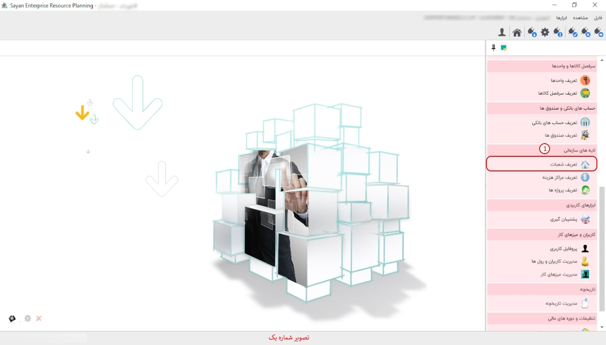
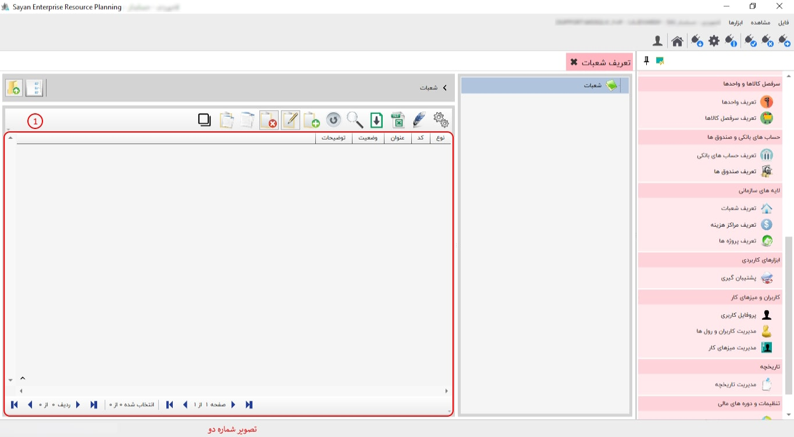

این قسمت به شما امکان تعریف شعبات را می دهد، تعریف شعبات در سیستم های صدور سفارشات، انبارداری، خریدوفروش و تولید مورد استفاده شما قرار می گیرد. به عنوان مثال در سیستم خرید و فروش می توانید مشخص کنید کالای خریداری شده مربوط به کدام شعبه است. پیشنهاد می شود ابتدا شعبات را گروه بندی کنید، سپس در درون هر گروه شعبه ی مورد نظر را تعریف نمایید.
برای ادامه مطلب به تصویر شماره دو مراجعه نمایید.
-کادر شماره یک:این بخش، این امکان را به شما می دهد که شعبات مد نظر خود را تعریف و مشاهده نمایید.
در این قسمت می توانید شعبه مد نظر خود را از طریق این آیکون ایجاد نمایید.
برای ادامه مطلب به تصویر شماره سه مراجعه نمایید.

-کادر شماره یک:در این قسمت می بایست روی گزینه شعبه کلیک نمایید.
-کدجزء(کادر شماره دو):در این بخش، کد بهصورت پیشفرض برای شما ایجاد میشود. به همین دلیل نیازی به تغییر در کد جزء نیست.
-عنوان(کادر شماره چهار):در این بخش، عنوان شعبه مد نظر خود را وارد نمایید.